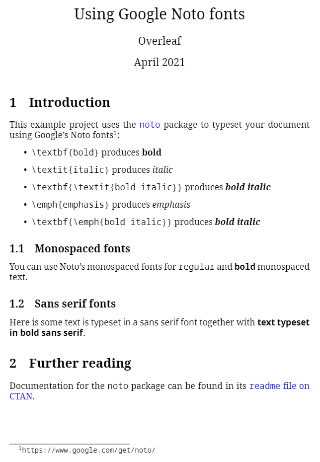
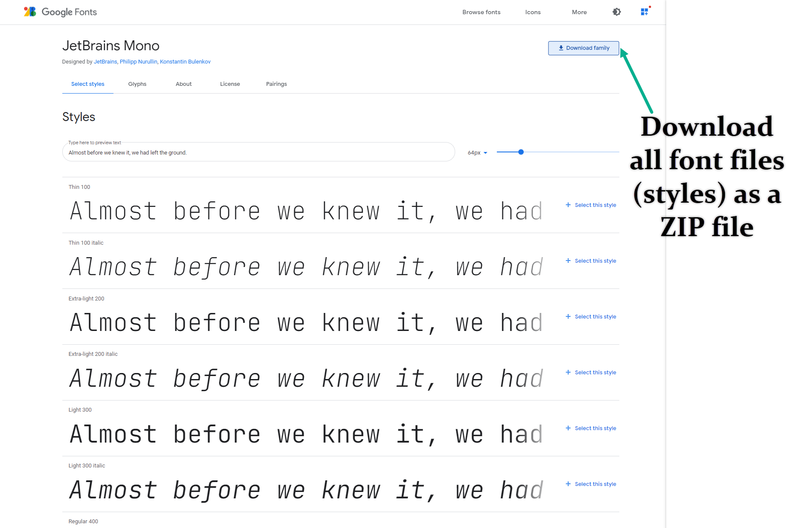
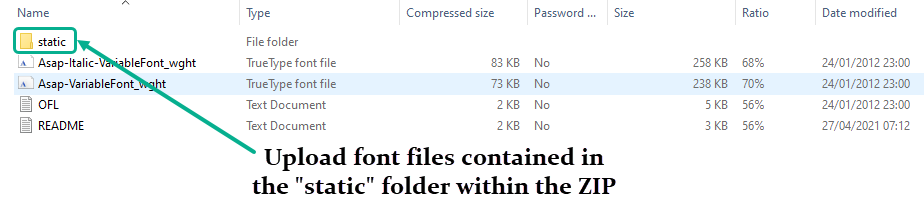
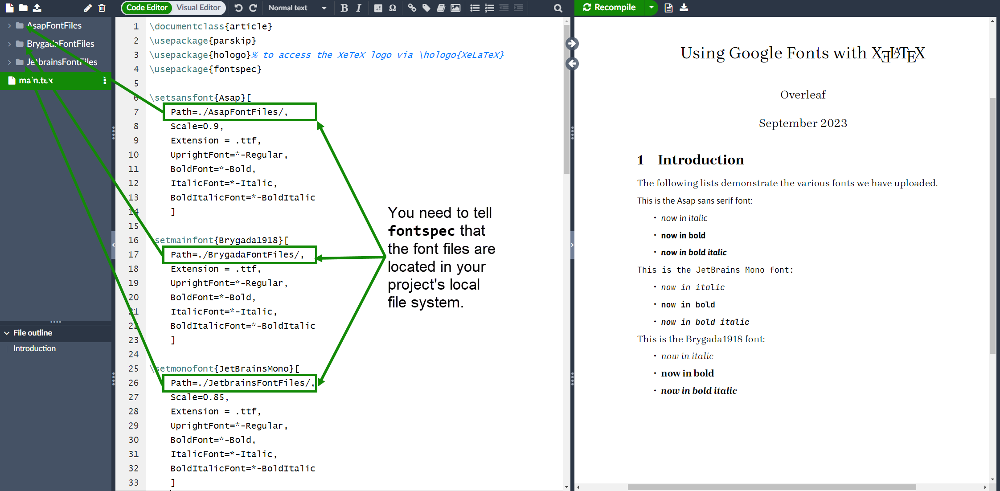

XeLaTeX
Introduction
XeTeX is a typesetting engine derived from Donald Knuth's original TeX software. However, unlike Knuth's original program, XeTeX natively reads (inputs) UTF-8 encoded Unicode text and, with assistance from its built-in HarfBuzz shaping engine, supports modern font formats such as OpenType (OTF) and SIL's Graphite font technology. The corresponding LaTeX compiler on Overleaf is called xelatex. Anyone interested to better understand the evolution of different TeX engines may wish to read the Overleaf article What's in a Name: A Guide to the Many Flavours of TeX.
The basics: Times New Roman
Times New Roman is a commonly-used font and here's an example of its use on Overleaf via the XeLaTeX compiler. In this example, the document font is set using \usemainfont{Times New Roman}, where the command \usemainfont{...} is provided by the package fontspec.
\documentclass[12pt]{article}
\usepackage{fontspec}
\setmainfont{Times New Roman}
\title{Sample font document}
\author{Overleaf}
\date{\today}
\begin{document}
\maketitle
This is an \textit{example} of a document compiled
with \textbf{XeLaTeX}. LuaLaTeX should also work too.
\end{document}
Open Times New Roman example using XeLaTeX in Overleaf
This example produces the following output:

You can also use LuaLaTeX to run the same code .
Setting fonts for different LaTeX elements
Different elements in a LaTeX document are formatted with different fonts; for example, in a verbatim environment the text is displayed using a typewriter style. Different font styles can be set for each context:
\documentclass[12pt]{article}
\usepackage{fontspec}
%-----------------------------------------------------------------------
\setmainfont{Times New Roman}
\setsansfont{Arial}
\setmonofont[Color={0019D4}]{Courier New}
%-----------------------------------------------------------------------
\title{Sample font document}
\author{Overleaf}
\date{\today}
\begin{document}
\maketitle
This an \textit{example} of document compiled with the
\textbf{XeLaTeX} compiler. If you have to write some code you can
use the \texttt{verbatim} environment:
\begin{verbatim}
Usually this environment is used to display code,
so here's a simple C program.
#include <stdio.h>
#define NUMYAYS 10
int main()
{
int i;
for (i = 0; i <= NUMYAYS; i++)
{
printf("Yay! Overleaf is Awesome!\n");
}
return 0;
}
\end{verbatim}
{\sffamily This is a sample text in \textbf{Sans Serif Font Typeface}}
\end{document}
To see the result, open this XeLaTeX example on Overleaf
In the previous example three different fonts are used, the next lines determine the elements that will use this fonts:
\setmainfont{Times New Roman}- This is the normal font used in most of the document, Times New Roman in the example.
\setsansfont{Arial}- The elements that require a sans font, explicitly declared by the
\ssfamilyin the example, will be typeset with Arial font.
\setmonofont{Courier New}- Everything to be formatted with a monospaced (typewriter-like) font will use the Courier New font. This command has an extra optional parameter inside braces:
Color={0019D4}- This sets the colour of the text, using a
Color=value using the hexadecimal HTML format. Selective and careful use of text colour can be useful when making a presentation.
Fonts in Overleaf
There are a large number of fonts installed on Overleaf which you can use in your project, most easily via fontspec. The following examples show the use of fonts included on Overleaf's servers, such as Google Noto, together with fonts that you need to upload from Google Fonts.
Fonts installed on Overleaf's servers: Google Noto fonts
Because TeX Live—which is used by Overleaf—includes the Google Noto fonts you can use them, via the fontspec package, within Overleaf projects compiled using the XeLaTeX or LuaLaTeX compilers. Here is a sample project which uses the noto package to configure your document for typesetting with the NotoSerif, NotoSans and NotoSansMono font families. Documentation on the noto package can be found in its readme file on CTAN.
\documentclass{article}
\usepackage{xcolor}
\usepackage{noto}
\usepackage{hyperref}
\title{Using Google Noto fonts}
\author{Overleaf}
\date{April 2021}
\begin{document}
\maketitle
\section{Introduction}
This example project uses the \href{https://ctan.org/pkg/noto?lang=en}{\color{blue}\texttt{noto}} package to typeset your document using Google's Noto fonts\footnote{\url{https://www.google.com/get/noto/}}:
\begin{itemize}
\item \verb|\textbf{bold}| produces \textbf{bold}
\item \verb|\textit{italic}| produces \textit{italic}
\item \verb|\textbf{\textit{bold italic}}| produces \textbf{\textit{bold italic}}
\item \verb|\emph{emphasis}| produces \emph{emphasis}
\item \verb|\textbf{\emph{bold italic}}| produces \textbf{\emph{bold italic}}
\end{itemize}
\subsection{Monospaced fonts}
You can use Noto's monospaced fonts for \texttt{regular} and \texttt{\textbf{bold}} monospaced text.
\subsection{Sans serif fonts}
Here is some \textsf{text is typeset in a sans serif font} together with \textbf{\textsf{text typeset in bold sans serif}}.
\section{Further reading}
Documentation for the \texttt{noto} package can be found in its \href{http://mirrors.ctan.org/fonts/noto/README}{\color{blue}\texttt{readme} file on CTAN}.
\end{document}
Open this XeLaTeX example on Overleaf to explore the Noto fonts

Using fonts not installed on Overleaf's servers: Google Fonts example
To use OpenType fonts which are not installed on Overleaf's servers, you must first upload the font files to your Overleaf project—provided the font licenses permit this. Once the OpenType fonts are uploaded, set the project compiler to XƎLaTeX (or LuaLaTeX) and use fontspec to configure your fonts.
The example project outlined below shows how to create folders, upload fonts and configure them with fontspec. For our example we'll use the following selection of fonts from Google Fonts:
- Serif font: Brygada1918
- Sans serif font: Asap
- Monospace font: JetBrains Mono
Note: We are not suggesting this example provides a typographically harmonious combination of type styles, it merely shows how to upload, configure and use fonts of your choice.
For each typeface you need to download the font family from Google Fonts:

Note: Some Google fonts are avalable as "static" OpenType fonts and so-called "variable" OpenType fonts. If the downloaded ZIP file has a folder called "static" you should upload the fonts in that folder, not the variable-font versions:

Next, you need to upload the font files to your project but because font families contain multiple font files you may wish to create individual Overleaf project folders to contain the files—using one folder per font family. The following video shows how to do that. Later, we'll need to instruct XƎLaTeX where to find your project's fonts—because they aren't pre-installed on Overleaf's servers.
Configuring fontspec to use the fonts
After uploading the font-family files into Overleaf project folders we can configure them for use via fontspec. In the following LaTeX code, note how we have used the Path parameter to tell fontspec that the font files are located in a local folder within our project's file system:
\setmainfont{Brygada1918}[
Path=./BrygadaFontFiles/,
Extension = .ttf,
UprightFont=*-Regular,
BoldFont=*-Bold,
ItalicFont=*-Italic,
BoldItalicFont=*-BoldItalic
]
\setsansfont{Asap}[
Path=./AsapFontFiles/,
Scale=0.9,
Extension = .ttf,
UprightFont=*-Regular,
BoldFont=*-Bold,
ItalicFont=*-Italic,
BoldItalicFont=*-BoldItalic
]
\setmonofont{JetBrainsMono}[
Path=./JetbrainsFontFiles/,
Scale=0.85,
Extension = .ttf,
UprightFont=*-Regular,
BoldFont=*-Bold,
ItalicFont=*-Italic,
BoldItalicFont=*-BoldItalic
]

Open XeLaTeX and Google Fonts demo on Overleaf
The fontspec package provides a wealth of options for configuring OpenType fonts for use with LuaLaTeX or XƎLaTeX—its excellent documentation contains numerous examples which you can explore to fine-tune the design and typesetting of your documents.
Further reading
For more information see:
- Bold, italics and underlining
- Font sizes, families, and styles
- Font typefaces
- Paragraph formatting
- Line breaks and blank spaces
- Text alignment
- Multiple columns
- Management in a large project
- Multi-file LaTeX projects
- International language support
- Choosing a LaTeX Compiler
- List of OTF and TTF fonts installed on Overleaf
- Google's fonts collection
fontspecpackage manual
Overleaf guides
- Creating a document in Overleaf
- Uploading a project
- Copying a project
- Creating a project from a template
- Using the Overleaf project menu
- Including images in Overleaf
- Exporting your work from Overleaf
- Working offline in Overleaf
- Using Track Changes in Overleaf
- Using bibliographies in Overleaf
- Sharing your work with others
- Using the History feature
- Debugging Compilation timeout errors
- How-to guides
- Guide to Overleaf’s premium features
LaTeX Basics
- Creating your first LaTeX document
- Choosing a LaTeX Compiler
- Paragraphs and new lines
- Bold, italics and underlining
- Lists
- Errors
Mathematics
- Mathematical expressions
- Subscripts and superscripts
- Brackets and Parentheses
- Matrices
- Fractions and Binomials
- Aligning equations
- Operators
- Spacing in math mode
- Integrals, sums and limits
- Display style in math mode
- List of Greek letters and math symbols
- Mathematical fonts
- Using the Symbol Palette in Overleaf
Figures and tables
- Inserting Images
- Tables
- Positioning Images and Tables
- Lists of Tables and Figures
- Drawing Diagrams Directly in LaTeX
- TikZ package
References and Citations
- Bibliography management with bibtex
- Bibliography management with natbib
- Bibliography management with biblatex
- Bibtex bibliography styles
- Natbib bibliography styles
- Natbib citation styles
- Biblatex bibliography styles
- Biblatex citation styles
Languages
- Multilingual typesetting on Overleaf using polyglossia and fontspec
- Multilingual typesetting on Overleaf using babel and fontspec
- International language support
- Quotations and quotation marks
- Arabic
- Chinese
- French
- German
- Greek
- Italian
- Japanese
- Korean
- Portuguese
- Russian
- Spanish
Document structure
- Sections and chapters
- Table of contents
- Cross referencing sections, equations and floats
- Indices
- Glossaries
- Nomenclatures
- Management in a large project
- Multi-file LaTeX projects
- Hyperlinks
Formatting
- Lengths in LaTeX
- Headers and footers
- Page numbering
- Paragraph formatting
- Line breaks and blank spaces
- Text alignment
- Page size and margins
- Single sided and double sided documents
- Multiple columns
- Counters
- Code listing
- Code Highlighting with minted
- Using colours in LaTeX
- Footnotes
- Margin notes
Fonts
Presentations
Commands
Field specific
- Theorems and proofs
- Chemistry formulae
- Feynman diagrams
- Molecular orbital diagrams
- Chess notation
- Knitting patterns
- CircuiTikz package
- Pgfplots package
- Typesetting exams in LaTeX
- Knitr
- Attribute Value Matrices
Class files
- Understanding packages and class files
- List of packages and class files
- Writing your own package
- Writing your own class